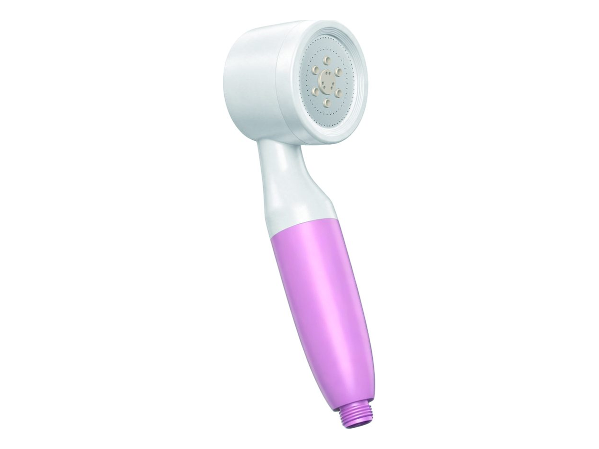

淋浴
淋浴WT-SH02
手持式淋浴过滤器
SKU: WT-SH02
起订量：询价时确认

淋浴过滤器
多模式淋浴过滤器
WT-SH15 — 多模式淋浴过滤器. 关键规格： 喷淋模式 7. 规格按型号及订单确认。
电压／频率可按目标国家配置，其他配置按订单确认。
ROPureOEM 目录中的 6 行规格。
| 喷淋模式 | 7 |
|---|---|
| 控制方式 | 360° stepless adjustment |
| 连接方式 | G1/2 |
| 滤芯 | 按订单确认（Confirmed per order） |
| 流量／压力／温度 | 按订单确认（Confirmed per order） |
| 滤芯寿命／尺寸 | 按订单确认（Confirmed per order） |
规格来源于 ROPureOEM 目录。尚未确认的数值标注为“按订单确认（Confirmed per order）”，不发布未经确认的参数。